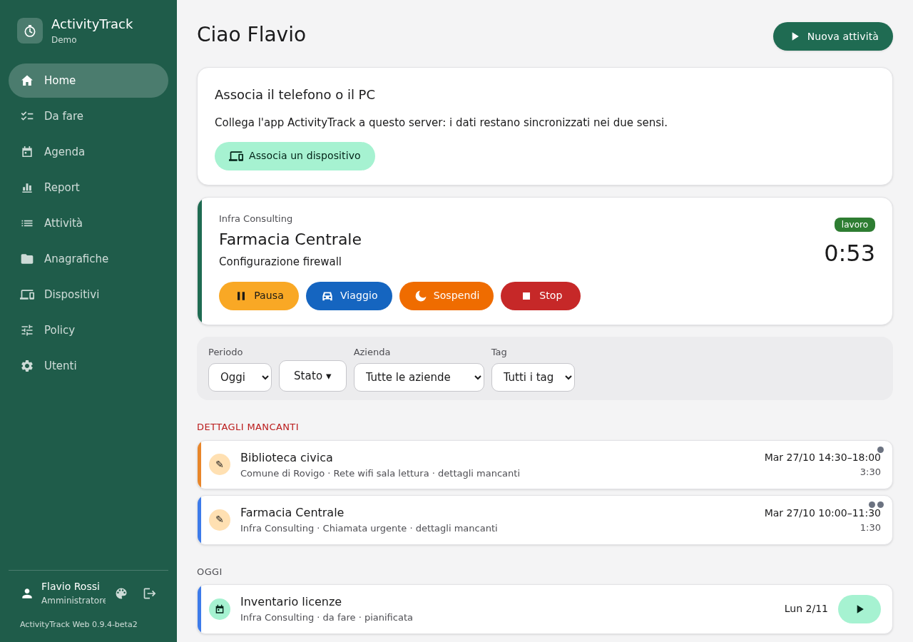
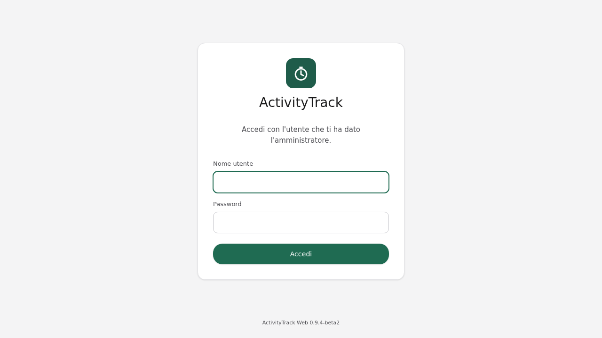
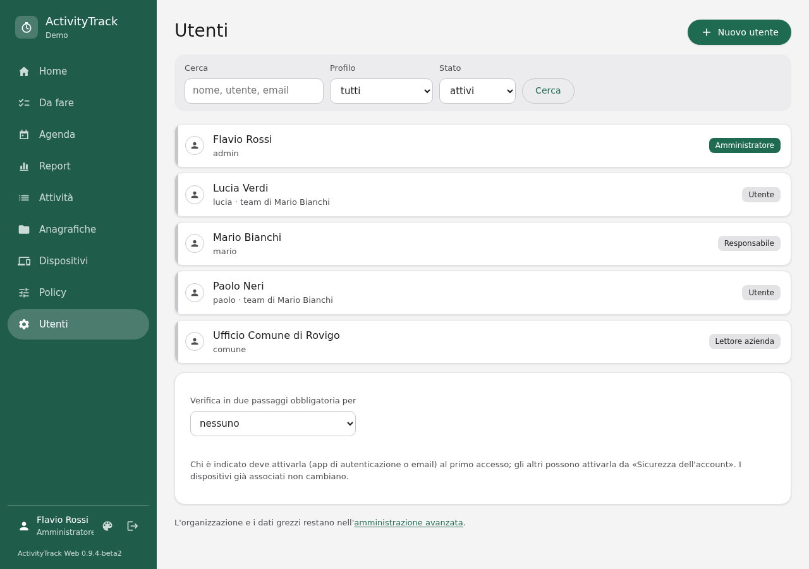
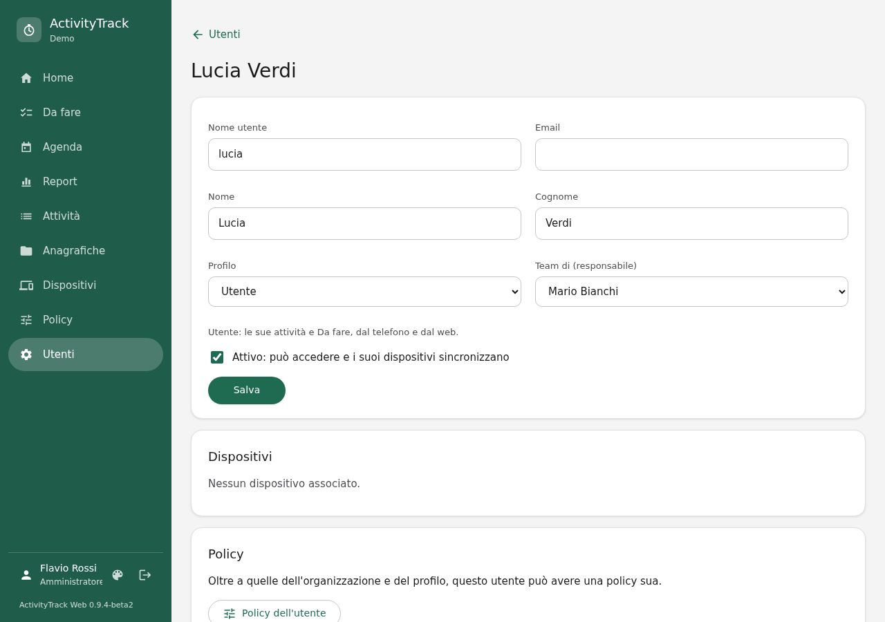
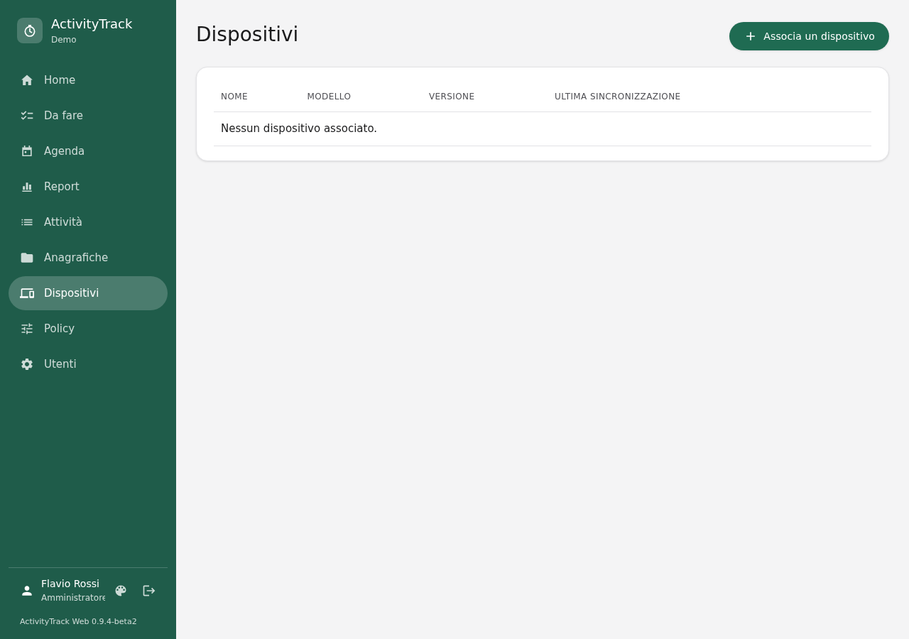
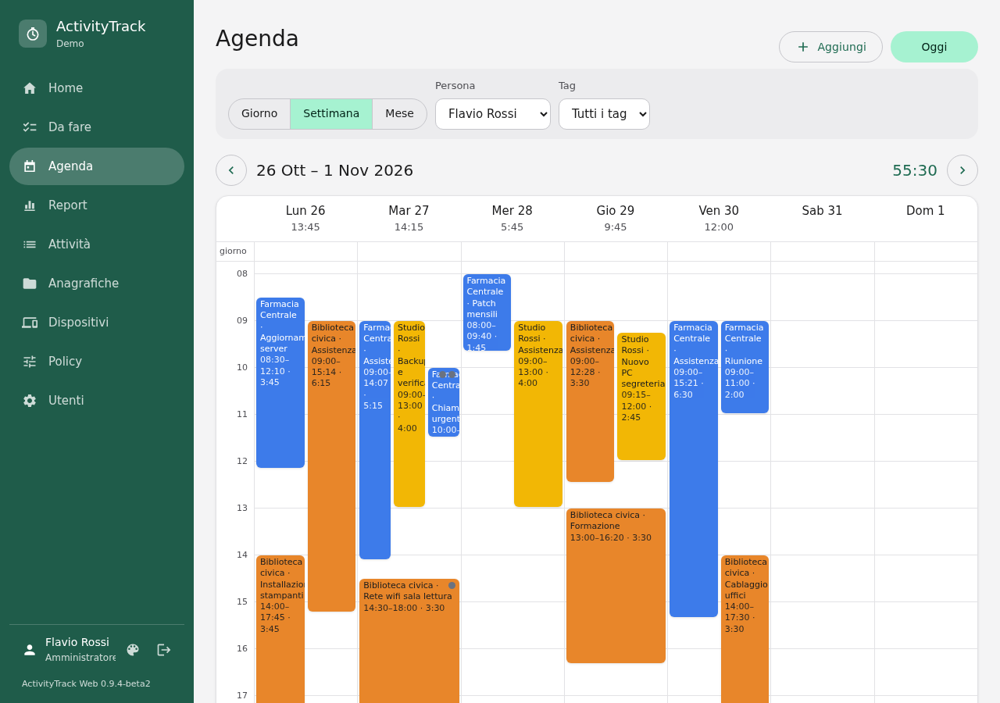
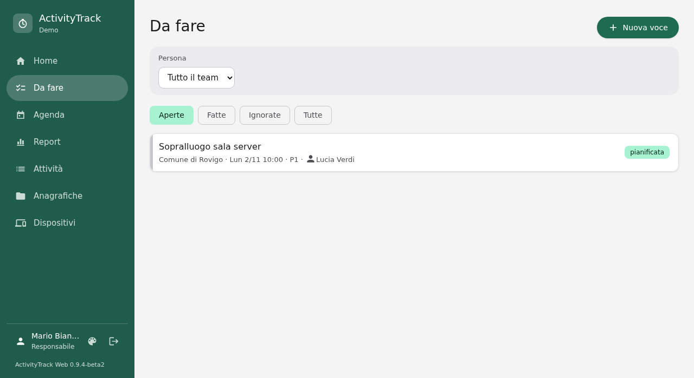
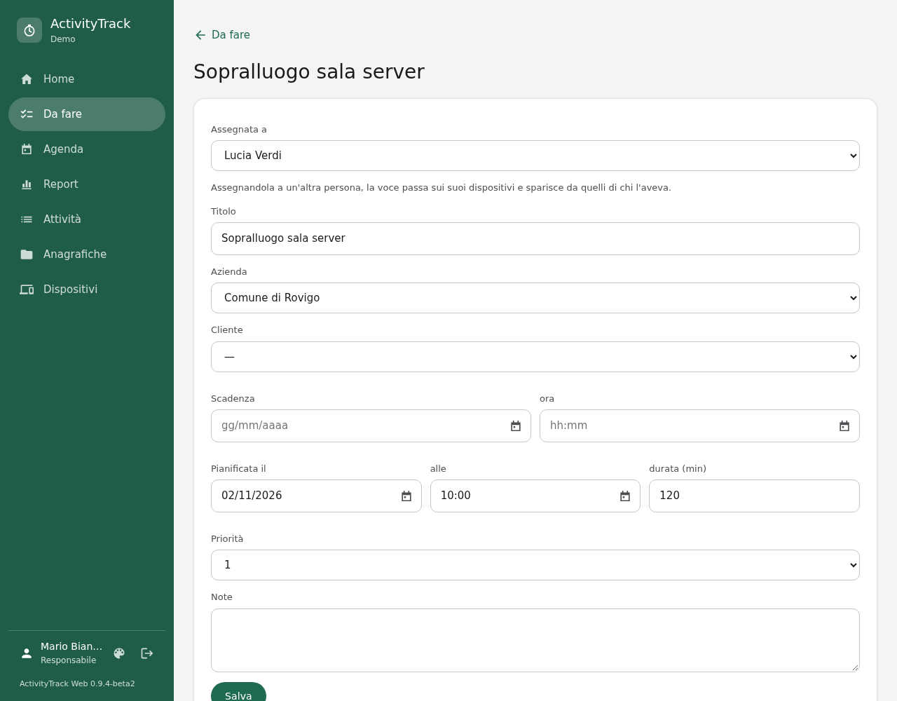
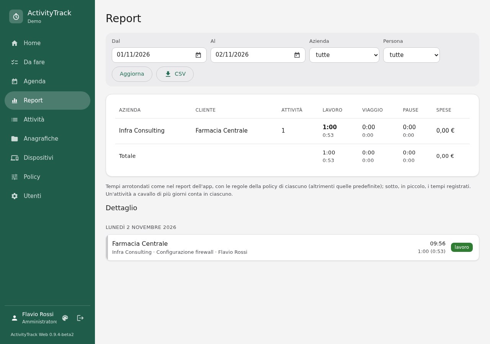

0.9.9
Version 0.9.9 (November 2026). For whoever installs and runs the organisation's server; users of the app find everything in the ActivityTrack User manual.
ActivityTrack Web is the organisation's server for the ActivityTrack app:
One server serves one organisation. The phone works without a network too: the changes wait and leave when the network is back.

The full instructions are in docs/INSTALL.md, in the
repository and in the package. In short:
.deb package from the releases page..tar.gz archive, or a clone of the repository.The package makes the service user, the folders and the database, but
does not start the service. First write
/etc/activitytrack-web/settings.ini:
| Key | What |
|---|---|
[server] base_url |
the HTTPS address the phones reach the server by; it goes into the
QR codes. With a path
(https://www.example.com/activitytrack) the application
lives there |
[server] allowed_hosts |
the names and addresses the server is reached by |
[server] time_zone |
the time zone of days and reports (default
Europe/Rome) |
[server] tls_pin |
only with a self-signed certificate: the fingerprint of its key, which the app pins |
[database] |
SQLite (default) or PostgreSQL |
[files] max_mb, offload |
largest attachment; who sends the files: Django, nginx or Apache |
[policy] key, cert |
key and certificate to sign the policies and the update manifests
(optional); without them the server makes its own key on first start, in
signing/ of the data folder: back it up |
[updates] |
the manifest address, channels and interval for the new versions (optional, see Updates) |
[mail] |
mail server for the login codes by email (optional) |
Then create the organisation with the first administrator and start the service:
activitytrack-web-manage setup --org "My company" --admin admin
systemctl enable --now activitytrack-web.socketA web server (nginx or Apache) goes in front: the examples are in
/usr/share/activitytrack-web/deploy/.
Updating. With the package, install the new
.deb: the database is updated and the service restarts by
itself. With the archive or the clone, replace the code, then
activitytrack-web-manage migrate,
activitytrack-web-manage collectstatic --noinput and
restart the service.
Management commands.
activitytrack-web-manage runs Django's commands as the
service user, for example migrate,
createsuperuser or shell. setup
and the web pages ask for a password of at least 10 characters, not a
common one and unlike the user name. clean_json_fields
repairs, once after updating from 0.9.4-beta4 or earlier, the tags,
phone numbers and plugin fields a phone stored in a wrong shape
(--dry-run only lists them).

Everyone logs in with the user name and password the administrator gave them. After 10 wrong attempts in a row from the same address, the login holds back for a few minutes.
Two-step login. From "Sicurezza dell'account" (account security: one's name at the bottom of the menu) anyone may ask, after the password, for a 6-digit code:
[mail] in
settings.ini).Turning it on gives 10 recovery codes to keep: each works once instead of the code, when the phone or the mailbox is lost. After 5 wrong codes the login starts again from the password. Paired phones are not concerned: they sync with their token.
The menu on the left (on a phone, the bar at the bottom) has Home, Da fare (To-dos), Agenda, Report, Attività (Activities), Anagrafiche (Master data) and Dispositivi (Devices); administrators also have Policy and Utenti (Users). At the bottom is one's own name: a click opens "Cambia password" (change password).
The web interface is in Italian; the screenshots show it as it is.

The Users page lists the people of the organisation. Search by name, user name or email, and filter by profile and state. "Nuovo utente" (new user) asks for a user name, name, profile and a password (at least 10 characters, not a common one, not like the name).
| Profile | May |
|---|---|
| Administrator | everything: users, phones, policies, central master data, everyone's data |
| Manager | central master data; reads their team's activities and those done for their companies, whoever did them; fixes their team's times; assigns To-dos to the team; the team's reports |
| User | their own activities and To-dos, from the phone and the web; their personal master data, when the policy allows it |
| Company reader | only the report of the closed activities of the companies given to them; no phone. Meant for a client's administration |

On a user's sheet:
An administrator cannot drop their own profile nor deactivate
themselves. Another administrator, or
activitytrack-web-manage createsuperuser, helps when
needed.
At the bottom of the Users page, "Verifica in due passaggi obbligatoria per" (two-step login required for): nobody, administrators, administrators and managers, everyone. Whoever is concerned and has not turned it on can only do that at their first login. On a user's sheet, "Azzera" (reset) removes it for someone who lost their phone: they set it up again at the next login. The padlock 🔒 in the list marks who has it.
Django's old administration stays reachable from the bottom of the Users page ("amministrazione avanzata"), for the organisation and raw data. Only users with the Administrator profile get in, through the normal login, with the two-step login and the hold on wrong attempts; it takes the theme and colour of their preferences.

Each user pairs their phones and PCs from Dispositivi → "Associa un dispositivo": a QR code appears, to be scanned in the app with Settings → Sync → "Scan the QR code", and below it the link to paste in ActivityTrack Desktop on the PC. The code is good for 10 minutes and once; the page shows the device as soon as it is paired. A PC never sends to the management systems.
When the phone syncs.
There are no push notifications: a change made on the web reaches the phone within 15 minutes, at once with the app open. Without a network it waits and leaves when the network is back.
The app's track map can use an offline map: a basic map (roads, rivers, lakes, borders, place names) kept on the phone, which works without a network. The Mappe page (admins only) prepares it:
settings.ini
([maps]); a map above 48 MB is refused.build.protomaps.com. The row shows in preparazione
(being prepared), then pronta (ready) or non riuscita
(failed, with the reason; the previous version stays on offer).
Aggiorna prepares it again.The phones fetch the maps with the sync, on Wi-Fi (within 15 minutes,
at once if the app is open) and remove those you remove. A phone without
a server can have the same maps by copying .pmtiles files
into the maps folder of its data folder. Details and
commands (build_maps, periodic refresh):
docs/OFFLINE-MAPS.md.
The Aggiornamenti page (admins only) tells the server where to look for new versions of ActivityTrack and whom to believe:
prod, beta, test,
dev), the hours between checks (0 = never on its own).
Controlla ora checks at once.Companies, clients, roles, tags, quick choices and materials are central (everyone sees them; administrators and managers change them) or personal (a user's own, when the policy allows it). The app and the web show which is which. Companies, clients and tags have an optional colour, chosen among the app's, from the web too.
When the phone and the server have master data with the same name, they become one at the first sync, with the server's data. For tags the text counts: the name stays, the colour is the server's.
A policy decides what the phones' apps may do and change: features, fields, settings, behaviours. Each phone gets, key by key, the organisation's policy, then the profile's, then the user's: the most specific wins. What stays "non impostato" (not set) leaves the app as it is.

For each setting:
The policies reach the phones with the sync, signed by the server:
with the key and certificate of [policy] in
settings.ini if you set them, otherwise with a key the
server made for itself on first start (signing/ in the data
folder). The app checks the signature, and the first signed
policy it applies fixes the signer's name (CN): from then on it
refuses policies signed by another name and unsigned ones. So back up
signing/ with the data and do not replace the key with one
of another name. Apps before 0.9.9 do not know the generated key: they
keep receiving the policy unsigned.
Some settings count on the web too:
rounding…, carryOverMin): the web computes
Agenda and Report with each person's policy rules. The phone's own
settings do not reach the server: to get on the web the same times as on
the phone, set them in the policy.editableTimes) locked
to "no": on the web the user only adds travels and pauses; an
administrator or their manager fixes the times.tagsFreeText) off: on the
web only the master-data tags can be chosen.Everyone finds their own work on the web, as in the app.

Dates and times. In the forms dates and times are typed in the format chosen in the preferences, or picked with the button at the right of the field: a calendar starting on Monday and, for times, the app's 5-minute grid (one row per hour, 12 hours at a time; ▲ Prima / Dopo ▼ move the window by 3 hours). Start and end are chosen together: drag from the first cell to the last, or tap the first and then the last, and OK; at the top the range and its length, the hatched cells are taken by other activities of that day. Orario esatto (exact time) takes the minutes off the grid (e.g. 09:37). In the forms the company comes before the client and filters its list; a client chosen brings its company.

Preferences. From the palette icon next to one's name (on a phone: Altro → Preferenze), everyone chooses:
The preferences are the user's: they hold on every browser they sign in with.
The language (Italian or English) is chosen on the same page and holds for the browser in use; until you choose one, the pages follow the browser's language. The buttons, labels and messages are translated; what you type (names, notes) stays as written.

Assigned to-dos. A manager, or an administrator, creates a to-do and picks "Assegnata a" (assigned to): the to-do becomes the chosen person's and reaches their phones. Reassigned, it leaves the phones of whoever had it. The assignee sees "Assegnata da …" (assigned by) and works it as their own; the manager follows it on the Da fare page with Persona → "Tutto il team" (the whole team).


Checks after a sync. When two phones changed the same activity and its segments overlap, the activity is marked "To check". With times locked by the policy, an administrator or the manager fixes it from the sheet on the web. A change the server refuses (for example locked central master data) shows on the phone as "Not synced", with the reason.

The Report shows the totals by company and client over a period, with the times rounded as in the app and, in small, the recorded ones. Below is the detail day by day. An activity over several days counts in each, except for the night carry-over.
CSV exports one row per activity and day, with the recorded and the rounded minutes. Managers and administrators filter by person; a reader only sees the closed activities of their companies.
docs/SECURITY.md describes what protects the server and
what the administrator has to do. In short:
tls_pin; then HSTS in the web
server;files/ folder (attachments), together with the secret key
(/var/lib/activitytrack-web/secret_key) and the policy
key;To save an SQLite database:
sqlite3 /var/lib/activitytrack-web/activitytrack.sqlite3 ".backup '/root/activitytrack-$(date +%F).sqlite3'"With PostgreSQL, use pg_dump activitytrack.
| Problem | What to do |
|---|---|
| The site answers 400 "Bad Request" | the name used is not in allowed_hosts |
| The phone says "certificate not valid" | self-signed certificate without tls_pin, or made as a
CA (docs/INSTALL.md §4) |
| The QR code is not read | raise the screen brightness, or paste in the app the link under "Non riesci a inquadrarlo?" |
| "Codice scaduto" (code expired) | the code is good for 10 minutes and once: make another |
| A user lost the phone with the authenticator app | a recovery code, or the administrator "Azzera" (resets) it on their sheet |
| The app's code is always "non valido" (not valid) | the phone's or the server's clock is wrong: sync it (NTP) |
| A user no longer syncs | deactivated, or the phone was revoked (Users → their sheet) |
| Attachments do not open on the web | with offload = nginx or apache the web
server needs the example's configuration |
| A change from the web does not arrive at once | it arrives within 15 minutes; opening the app brings it at once |
| Different times on the phone and the web | the phone's own rounding: set it in the policy (§7) |
| The site does not answer after an update | systemctl status activitytrack-web.socket activitytrack-web.service,
and the log with journalctl -u activitytrack-web |